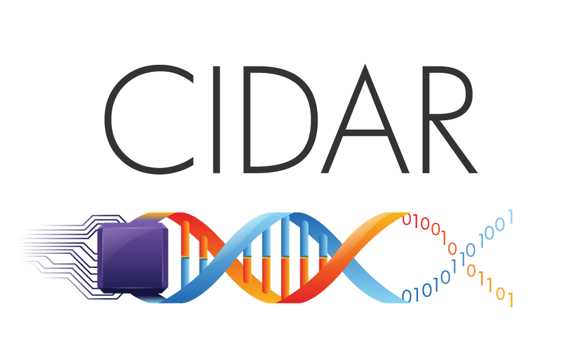

<!-- Wide card with share menu button -->

<div class="demo-card-wide mdl-card mdl-shadow--2dp">
    <div class="mdl-card__title">
        <h2 class="mdl-card__title-text">3DuF v1.0</h2>
    </div>
    <div class="mdl-card__supporting-text">
        
        3DuF is microfluidic design environment developed by <a href="http://cidarlab.org" target="_blank">CIDAR</a>.
        Source code, issue tracking and feature requests are available at <a href="https://github.com/CIDARLAB/3DuF/" target="_blank">Github</a>.
        <hr />
        <h5>Usage</h5>
        <table class="tg">
            <tr>
                <td class="tg-yw4l"><pre>del</pre></td>
                <td class="tg-yw4l">- Delete Feature</td>
            </tr>
            <tr>
                <td class="tg-yw4l"><pre>left click</pre></td>
                <td class="tg-yw4l">- Place Feature</td>
            </tr>
            <tr>
                <td class="tg-yw4l"><pre>right click</pre></td>
                <td class="tg-yw4l">- Select Feature</td>
            </tr>
            <tr>
                <td class="tg-yw4l"><pre>mouse scroll</pre></td>
                <td class="tg-yw4l">- Zoom</td>
            </tr>
            <tr>
                <td class="tg-yw4l"><pre>arrow keys</pre></td>
                <td class="tg-yw4l">- Pan</td>
            </tr>
        </table>
        <hr/>
        Developed by:
        Aaron Heuckroth, Joshua Lippai and Radhakrishna Sanka.

    </div>

    <div class="mdl-card__menu">
        <button class="mdl-button mdl-button--icon mdl-js-button mdl-js-ripple-effect">
            <i class="material-icons close-popdown">clear</i>
        </button>
    </div>
</div>
